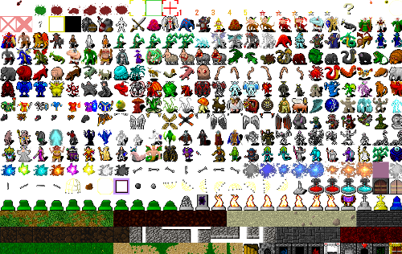

Haskell roguelike - UI & tiles
UI style
One of the big decisions that needs to be made first is what style of roguelike UI you want to support. Most traditional roguelikes are ASCII based but there are also many that choose to use flat 2D (orthogonal or hexagonal) tiles.
ASCII may sound limited, but it can actually convey a lot of information about a roguelike world in a small space. If you want to go this route take a look at LambdaHack. Notice that it uses SDL2 and then “draws” ASCII. Alternatively take a look at Brick as a way to render the ASCII.
For this series I’ve decided to use 2D tiles instead of ASCII. The next big question is what graphics backend to use to draw the tiles. Options include SDL2, OpenGL, fltkhs etc. Each of these graphics libraries take some investment to learn. I’ve decided to go with a simpler option and use a web browser as the display engine. As you’ll see this gives us some really powerful features with minimal effort.
Browser UI
The decision then is to have a haskell backend that serves the game data and images over HTTP. To make the game responsive I’ll be using web sockets. I’m going to do as much work as possible in haskell and keep the javascript to a bare minimum. For that reason I’m not using any frameworks like JQuery, node etc. Just plain javascript with a few utility libraries.
(There is a demo ASCII terminal GUI frontend, but this series assumes that you are following along with the web GUI)
Tiles
Given the choice to use tiles, the next step is to find or draw tiles. Drawing tiles is not an option for me, fortunately there is a lot of fantastic artwork available online. OpenGameArt is one such site.
I decided to go with 32x32 pixel tiles. I felt that was a good balance between being big enough for reasonably interesting graphics but small enough to fit a fair amount on one screen. I ended up choosing the Dungen Crawl Stone tile set

It is amazing that such high quality artwork is freely available. Take a look around if you decide to use tiles, you should be able to find something that fits your game nicely.
Viewing and selecting tiles
Once you have selected a tileset you’ll end up spending time selecting the particular tiles from the tileset that you want to use. To help get the row and column for a tile I created a simple HTML page that loads the tileset and shows the (row,col) coordinates on hover or click.
02_tileset/tiles.html (2 to 43)
<html>
<body>
<img src="DungeonCrawl_ProjectUtumnoTileset_0.png" id="tiles"/>
</body>
<script>
function getMousePos(canvas, e) {
var rect = canvas.getBoundingClientRect();
return {x: e.clientX - rect.left, y: e.clientY - rect.top};
}
function onClick(e){
const pos = getMousePos(this, e);
const mx = pos.x;
const my = pos.y;
const gx = Math.floor( mx / 32 );
const gy = Math.floor( my / 32 );
alert( gx + ", " + gy );
}
function onMouseMove(e){
const t = document.getElementById("tiles");
t.title = "";
const pos = getMousePos(this, e);
const mx = pos.x;
const my = pos.y;
const gx = Math.floor( mx / 32 );
const gy = Math.floor( my / 32 );
t.title = gx + ", " + gy;
}
const e = document.getElementById("tiles");
e.addEventListener( "click", onClick, false );
e.addEventListener( "mousemove", onMouseMove, false );
</script>
</html>You can view a working live version here. The tiles are fairly large (~1.4mb) so you may need to give it a minute to load.
Next
In the next chapter I’ll focus on some of the infrastructure required for the web frontend